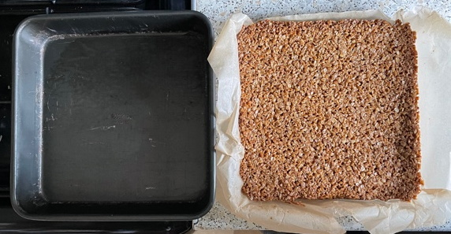
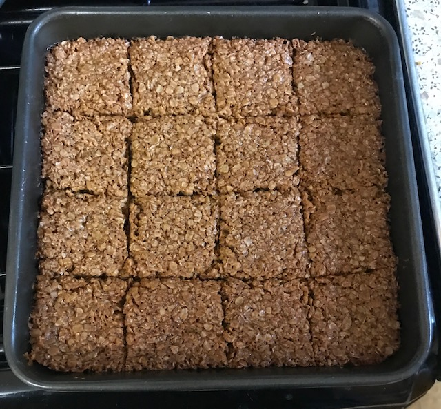

Flapjacks
- Preheat oven to 160°C
- Use large saucepan so do not need extra mixing bowl
- Heat gently until melted and dissolved
- 125g butter
- 90g golden syrup
- 90g light muscovado sugar
- Stir in and mix well
- Add extra ingredients (optional), 455g is half mixture
- Lightly butter tin or line with greaseproof paper
- Spoon mixture into tin and smooth the surface with wooden spoon at flat angle
- Bake at 160°C for 31 mins
- Leave to cool for 10 mins then mark into segments with paring knife
- Leave to cool completely
Extra ingredients
- 80g dried blueberries
- 6 dates & 40g walnuts, 2:1 ratio by weight
Serving
- Calories = 2500, 1/16 = 150
Notes
- 27 mins and flapjacks not quite chewy enough, nice but fall apart
- 35 mins and flapjacks crunchy and stay together

